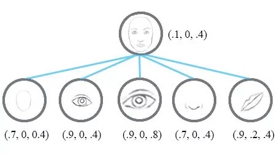

<!DOCTYPE html>
<html lang="en">

<head>
  <meta charset="utf-8" />
    
  <meta name="viewport" content="width=device-width, initial-scale=1, maximum-scale=1" />
  <title>
    CapsuleNetwork调研 |  HomePage
  </title>
  <meta name="generator" content="hexo-theme-yilia-plus">
  
  <link rel="shortcut icon" href="/favicon.ico" />
  
  
<link rel="stylesheet" href="/css/main.css">

  
  <script src="https://cdn.jsdelivr.net/npm/pace-js@1.0.2/pace.min.js"></script>
  
  

  

</head>

</html>

<body>
  <div id="app">
    <main class="content">
      <section class="outer">
  <article id="post-CapsuleNetwork" class="article article-type-post" itemscope
  itemprop="blogPost" data-scroll-reveal>

  <div class="article-inner">
    
    <header class="article-header">
       
<h1 class="article-title sea-center" style="border-left:0" itemprop="name">
  CapsuleNetwork调研
</h1>
 

    </header>
    

    
    <div class="article-meta">
      <a href="/2021/09/10/CapsuleNetwork/" class="article-date">
  <time datetime="2021-09-10T07:48:53.000Z" itemprop="datePublished">2021-09-10</time>
</a>
      
  <div class="article-category">
    <a class="article-category-link" href="/categories/ML/">ML</a> / <a class="article-category-link" href="/categories/ML/%E6%B7%B1%E5%BA%A6%E5%AD%A6%E4%B9%A0/">深度学习</a>
  </div>

      
      
<div class="word_count">
    <span class="post-time">
        <span class="post-meta-item-icon">
            <i class="ri-quill-pen-line"></i>
            <span class="post-meta-item-text"> 字数统计:</span>
            <span class="post-count">1.5k字</span>
        </span>
    </span>

    <span class="post-time">
        &nbsp; | &nbsp;
        <span class="post-meta-item-icon">
            <i class="ri-book-open-line"></i>
            <span class="post-meta-item-text"> 阅读时长≈</span>
            <span class="post-count">6分钟</span>
        </span>
    </span>
</div>

      
    </div>
    

    
    
    <div class="tocbot"></div>


    

    
    <div class="article-entry" itemprop="articleBody">
      
      

      
      <h2 id="为什么提出capsule"><a href="#为什么提出capsule" class="headerlink" title="为什么提出capsule"></a>为什么提出capsule</h2><p>在讨论胶囊网络前，我们先来看一下目前最通用的深度学习模型之一，卷积神经网络（CNN）。<br>CNN目前已经完成了很多不可思议的任务，对于整个机器学习领域都产生了很大的影响。然而，CNN善于检测特征，却在探索特征（视角，大小，方位）之间的空间关系方面效果较差。举一个简单的例子，对于一张人脸而言，它的组成部分包括面部轮廓，两个眼睛，一个鼻子和一张嘴巴。对于CNN而言，这些部分就足以识别一张人脸；然而，这些组成部分的相对位置以及朝向就没有那么重要。<br></p>
<p>一个简单的CNN模型可以正确提取鼻子、眼睛和嘴巴的特征，但会错误地激活神经元进行人脸检测。如果不了解空间方向，大小不匹配，那么对于人脸检测的激活将会太高，比如下图95%。</p>
<p></p>
<p>现在，假设每个神经元都包含特征的可能性和属性。例如，神经元输出的是一个包含 [可能性，方向，大小] 的向量。利用这种空间信息，就可以检测鼻子、眼睛和耳朵特征之间的方向和大小的一致性，因此对于人脸检测的激活输出就会低很多。</p>
<p></p>
<p>而如果我们将神经元从标量升级为向量，则相同的胶囊就可以检测不同方向的同一个物体类别</p>
<p></p>
<h2 id="Capsule的结构"><a href="#Capsule的结构" class="headerlink" title="Capsule的结构"></a>Capsule的结构</h2><p>基本一张图搞定，很好理解。这张图下游只有一个向量，实际上可以有多个向量，然后通过动态路由来决定每一个c的值。</p>
<p></p>
<p></p>
<p>唯一需要想明白的是，为什么要这样做squash</p>
<h2 id="动态路由"><a href="#动态路由" class="headerlink" title="动态路由"></a>动态路由</h2><p>动态路由确定的是上图的标量c，动态路由的motivation：低层的胶囊将会输入到和它“一致”的胶囊中。</p>
<blockquote>
<p>Lower level capsule will send its input to the higher level capsule that “agrees” with its input. This is the essence of the dynamic routing algorithm.</p>
</blockquote>
<p>动态路由算法如下所示：<br></p>
<p>也十分的好理解，刚开始将分配权重b设置为0，将l层的向量平均分发给l+1层，计算得出l+1层的结果后，反向计算l层向量到l+1层向量的距离，以此修改分配权重b。把l+1看做是聚类中心就更好理解了。</p>
<h2 id="MIND"><a href="#MIND" class="headerlink" title="MIND"></a>MIND</h2><p>MIND在capsule的基础之上，对其进行了一些改进。</p>
<blockquote>
<p>胶囊是一种新的神经元，它由传统的神经网络用一个向量来表示，而不是用一个标量来表示。基于向量的胶囊预计能够代表一个实体的不同性质，其中胶囊的方向代表一个属性，胶囊的长度用来表示该属性存在的概率。相应地，多兴趣提取器层的目标是学习表示用户兴趣属性的表示以及是否存在相应的兴趣。胶囊与兴趣表征之间的语义联系促使我们将行为/兴趣表征视为行为/兴趣胶囊，并采用动态路径从行为胶囊中学习兴趣胶囊。然而，原有的图像数据路由算法并不能直接应用于用户行为数据的处理。因此，我们提出了行为兴趣（B2I）动态路由算法，将用户的行为自适应地聚合到兴趣表示向量中，与原有的路由算法在三个方面有所不同：Shared bilinear mapping matrix、Randomly initialized routing logits、Dynamic interest number.</p>
</blockquote>
<h3 id="Shared-bilinear-mapping-matrix"><a href="#Shared-bilinear-mapping-matrix" class="headerlink" title="Shared bilinear mapping matrix"></a>Shared bilinear mapping matrix</h3><p>其实也是fixed bilinear mapping matrix，也就是上面结构图中的$W$，对于不同的capsule，只用同一个映射变量$W$。作者的理由：</p>
<ol>
<li>用户序列是变长的，因此不好设置某个数量的$W$</li>
<li>希望item embedding映射到同一个空间</li>
</ol>
<p>感觉有道理。</p>
<h3 id="Randomly-initialized-routing-logits"><a href="#Randomly-initialized-routing-logits" class="headerlink" title="Randomly initialized routing logits"></a>Randomly initialized routing logits</h3><p>顾名思义，高斯分布随机初始化的c，代替原本全0的c</p>
<h3 id="Dynamic-interest-number"><a href="#Dynamic-interest-number" class="headerlink" title="Dynamic interest number"></a>Dynamic interest number</h3><p>对于每个用户，兴趣的个数是动态确定的：<br>$$<br>K_{u}^{\prime}=\max \left(1, \min \left(K, \log <em>{2}\left(\left|\mathcal{I}</em>{u}\right|\right)\right)\right)<br>$$<br>这条感觉是凑数的</p>
<h2 id="代码"><a href="#代码" class="headerlink" title="代码"></a>代码</h2><p>可以看 <a href="https://github.com/bojone/Capsule" target="_blank" rel="noopener">https://github.com/bojone/Capsule</a><br>或者这里也有另一个实现：</p>
<figure class="highlight python"><table><tr><td class="gutter"><pre><span class="line">1</span><br><span class="line">2</span><br><span class="line">3</span><br><span class="line">4</span><br><span class="line">5</span><br><span class="line">6</span><br><span class="line">7</span><br><span class="line">8</span><br><span class="line">9</span><br><span class="line">10</span><br><span class="line">11</span><br><span class="line">12</span><br><span class="line">13</span><br><span class="line">14</span><br><span class="line">15</span><br><span class="line">16</span><br><span class="line">17</span><br><span class="line">18</span><br><span class="line">19</span><br><span class="line">20</span><br><span class="line">21</span><br><span class="line">22</span><br><span class="line">23</span><br><span class="line">24</span><br><span class="line">25</span><br><span class="line">26</span><br><span class="line">27</span><br><span class="line">28</span><br><span class="line">29</span><br><span class="line">30</span><br><span class="line">31</span><br><span class="line">32</span><br><span class="line">33</span><br><span class="line">34</span><br><span class="line">35</span><br><span class="line">36</span><br><span class="line">37</span><br><span class="line">38</span><br><span class="line">39</span><br><span class="line">40</span><br><span class="line">41</span><br><span class="line">42</span><br><span class="line">43</span><br><span class="line">44</span><br><span class="line">45</span><br><span class="line">46</span><br><span class="line">47</span><br><span class="line">48</span><br><span class="line">49</span><br><span class="line">50</span><br><span class="line">51</span><br><span class="line">52</span><br><span class="line">53</span><br><span class="line">54</span><br><span class="line">55</span><br><span class="line">56</span><br><span class="line">57</span><br><span class="line">58</span><br><span class="line">59</span><br><span class="line">60</span><br><span class="line">61</span><br><span class="line">62</span><br><span class="line">63</span><br><span class="line">64</span><br></pre></td><td class="code"><pre><span class="line"><span class="keyword">import</span> tensorflow <span class="keyword">as</span> tf</span><br><span class="line"><span class="keyword">from</span> tensorflow.python.keras.initializers <span class="keyword">import</span> RandomNormal</span><br><span class="line"><span class="keyword">from</span> tensorflow.python.keras.layers <span class="keyword">import</span> Layer</span><br><span class="line"></span><br><span class="line"></span><br><span class="line"><span class="class"><span class="keyword">class</span> <span class="title">CapsuleLayer</span><span class="params">(Layer)</span>:</span></span><br><span class="line">    <span class="function"><span class="keyword">def</span> <span class="title">__init__</span><span class="params">(self, input_units, out_units, max_len, k_max, iteration_times=<span class="number">3</span>,</span></span></span><br><span class="line"><span class="function"><span class="params">                 init_std=<span class="number">1.0</span>, **kwargs)</span>:</span></span><br><span class="line">        self.input_units = input_units</span><br><span class="line">        self.out_units = out_units</span><br><span class="line">        self.max_len = max_len</span><br><span class="line">        self.k_max = k_max</span><br><span class="line">        self.iteration_times = iteration_times</span><br><span class="line">        self.init_std = init_std</span><br><span class="line">        super(CapsuleLayer, self).__init__(**kwargs)</span><br><span class="line"></span><br><span class="line">    <span class="function"><span class="keyword">def</span> <span class="title">build</span><span class="params">(self, input_shape)</span>:</span></span><br><span class="line">        <span class="comment"># self.routing_logits = self.add_weight(shape=[1, self.k_max, self.max_len],</span></span><br><span class="line">        <span class="comment">#                                       initializer=RandomNormal(stddev=self.init_std),</span></span><br><span class="line">        <span class="comment">#                                       trainable=False, name="B", dtype=tf.float32)</span></span><br><span class="line">        self.bilinear_mapping_matrix = self.add_weight(shape=[self.input_units, self.out_units],</span><br><span class="line">                                                       initializer=RandomNormal(stddev=self.init_std),</span><br><span class="line">                                                       name=<span class="string">"S"</span>, dtype=tf.float32)</span><br><span class="line">        super(CapsuleLayer, self).build(input_shape)</span><br><span class="line"></span><br><span class="line">    <span class="function"><span class="keyword">def</span> <span class="title">call</span><span class="params">(self, inputs, **kwargs)</span>:</span></span><br><span class="line">        behavior_embddings, seq_len = inputs</span><br><span class="line">        batch_size = tf.shape(behavior_embddings)[<span class="number">0</span>]</span><br><span class="line">        <span class="comment">#seq_len = tf.squeeze(seq_len)</span></span><br><span class="line">        seq_len_tile = tf.tile(seq_len, [<span class="number">1</span>, self.k_max])</span><br><span class="line"></span><br><span class="line">        routing_logits = tf.stop_gradient(tf.truncated_normal(shape=[<span class="number">1</span>, self.k_max, self.max_len], stddev=self.init_std, name=<span class="string">'B'</span>))</span><br><span class="line"></span><br><span class="line">        <span class="keyword">for</span> i <span class="keyword">in</span> range(self.iteration_times):</span><br><span class="line">            mask = tf.sequence_mask(seq_len_tile, self.max_len)</span><br><span class="line">            pad = tf.ones_like(mask, dtype=tf.float32) * (<span class="number">-2</span> ** <span class="number">32</span> + <span class="number">1</span>)</span><br><span class="line">            routing_logits_with_padding = tf.where(mask, tf.tile(routing_logits, [batch_size, <span class="number">1</span>, <span class="number">1</span>]), pad)</span><br><span class="line">            weight = tf.nn.softmax(routing_logits_with_padding)</span><br><span class="line">            behavior_embdding_mapping = tf.tensordot(behavior_embddings, self.bilinear_mapping_matrix, axes=<span class="number">1</span>)</span><br><span class="line">            Z = tf.matmul(weight, behavior_embdding_mapping)</span><br><span class="line">            interest_capsules = squash(Z)</span><br><span class="line">            delta_routing_logits = tf.reduce_sum(</span><br><span class="line">                tf.matmul(interest_capsules, tf.transpose(behavior_embdding_mapping, perm=[<span class="number">0</span>, <span class="number">2</span>, <span class="number">1</span>])),</span><br><span class="line">                axis=<span class="number">0</span>, keep_dims=<span class="literal">True</span></span><br><span class="line">            )</span><br><span class="line">            routing_logits += delta_routing_logits</span><br><span class="line">        interest_capsules = tf.reshape(interest_capsules, [<span class="number">-1</span>, self.k_max, self.out_units])</span><br><span class="line">        <span class="keyword">return</span> interest_capsules</span><br><span class="line"></span><br><span class="line">    <span class="function"><span class="keyword">def</span> <span class="title">compute_output_shape</span><span class="params">(self, input_shape)</span>:</span></span><br><span class="line">        <span class="keyword">return</span> (<span class="literal">None</span>, self.k_max, self.out_units)</span><br><span class="line"></span><br><span class="line">    <span class="function"><span class="keyword">def</span> <span class="title">get_config</span><span class="params">(self, )</span>:</span></span><br><span class="line">        config = &#123;<span class="string">'input_units'</span>: self.input_units, <span class="string">'out_units'</span>: self.out_units, <span class="string">'max_len'</span>: self.max_len,</span><br><span class="line">                  <span class="string">'k_max'</span>: self.k_max, <span class="string">'iteration_times'</span>: self.iteration_times, <span class="string">"init_std"</span>: self.init_std&#125;</span><br><span class="line">        base_config = super(CapsuleLayer, self).get_config()</span><br><span class="line">        <span class="keyword">return</span> dict(list(base_config.items()) + list(config.items()))</span><br><span class="line"></span><br><span class="line"></span><br><span class="line"><span class="function"><span class="keyword">def</span> <span class="title">squash</span><span class="params">(inputs)</span>:</span></span><br><span class="line">    vec_squared_norm = tf.reduce_sum(tf.square(inputs), axis=<span class="number">-1</span>, keep_dims=<span class="literal">True</span>)</span><br><span class="line">    scalar_factor = vec_squared_norm / (<span class="number">1</span> + vec_squared_norm) / tf.sqrt(vec_squared_norm + <span class="number">1e-8</span>)</span><br><span class="line">    vec_squashed = scalar_factor * inputs</span><br><span class="line">    <span class="keyword">return</span> vec_squashed</span><br></pre></td></tr></table></figure>
<p>调用的时候</p>
<figure class="highlight python"><table><tr><td class="gutter"><pre><span class="line">1</span><br><span class="line">2</span><br><span class="line">3</span><br><span class="line">4</span><br><span class="line">5</span><br></pre></td><td class="code"><pre><span class="line">high_capsule = CapsuleLayer(input_units=<span class="number">8</span>,</span><br><span class="line">                            out_units=<span class="number">8</span>, max_len=<span class="number">50</span>,</span><br><span class="line">                            k_max=<span class="number">3</span>)((hist_seq, seq_len))</span><br><span class="line"><span class="comment">## hist_seq [None, 50, 8]</span></span><br><span class="line"><span class="comment">## seq_len [None, 50]</span></span><br></pre></td></tr></table></figure>


<h2 id="存在的问题"><a href="#存在的问题" class="headerlink" title="存在的问题"></a>存在的问题</h2><p>有人通过实验指出，Capsule的Routing算法并不合理（包括一些改进的routing算法）:<a href="http://proceedings.mlr.press/v101/paik19a/paik19a.pdf" target="_blank" rel="noopener">Capsule Networks Need an Improved Routing Algorithm</a>。<br>文章中提到了一些Routing的方法，这里总结一下：</p>
<ol>
<li>CapNet 《Dynamic routing between capsules》<br></li>
<li>EMCaps 《Matrix capsules with em routing》<br></li>
<li>OptimCaps 《An optimization view on dynamic routing between capsules》<br></li>
<li>GroupCaps 《Group equivariant capsule<br>networks》<br></li>
<li>AttnCaps 《Dynamic capsule<br>attention for visual question answering》<br></li>
</ol>
<h2 id="参考文献"><a href="#参考文献" class="headerlink" title="参考文献"></a>参考文献</h2><ol>
<li><p><a href="https://medium.com/ai%C2%B3-theory-practice-business/understanding-hintons-capsule-networks-part-iii-dynamic-routing-between-capsules-349f6d30418" target="_blank" rel="noopener">https://medium.com/ai%C2%B3-theory-practice-business/understanding-hintons-capsule-networks-part-iii-dynamic-routing-between-capsules-349f6d30418</a></p>
</li>
<li><p><a href="https://zhuanlan.zhihu.com/p/67910276" target="_blank" rel="noopener">https://zhuanlan.zhihu.com/p/67910276</a></p>
</li>
</ol>

      
      <!-- reward -->
      
      <div id="reward-btn">
        打赏
      </div>
      
    </div>
    
    
      <!-- copyright -->
      
        <div class="declare">
          <ul class="post-copyright">
            <li>
              <i class="ri-copyright-line"></i>
              <strong>版权声明： </strong s>
              本博客所有文章除特别声明外，均采用 <a href="https://www.apache.org/licenses/LICENSE-2.0.html" rel="external nofollow"
                target="_blank">Apache License 2.0</a> 许可协议。转载请注明出处！
            </li>
          </ul>
        </div>
        
    <footer class="article-footer">
      
          
<div class="share-btn">
      <span class="share-sns share-outer">
        <i class="ri-share-forward-line"></i>
        分享
      </span>
      <div class="share-wrap">
        <i class="arrow"></i>
        <div class="share-icons">
          
          <a class="weibo share-sns" href="javascript:;" data-type="weibo">
            <i class="ri-weibo-fill"></i>
          </a>
          <a class="weixin share-sns wxFab" href="javascript:;" data-type="weixin">
            <i class="ri-wechat-fill"></i>
          </a>
          <a class="qq share-sns" href="javascript:;" data-type="qq">
            <i class="ri-qq-fill"></i>
          </a>
          <a class="douban share-sns" href="javascript:;" data-type="douban">
            <i class="ri-douban-line"></i>
          </a>
          <!-- <a class="qzone share-sns" href="javascript:;" data-type="qzone">
            <i class="icon icon-qzone"></i>
          </a> -->
          
          <a class="facebook share-sns" href="javascript:;" data-type="facebook">
            <i class="ri-facebook-circle-fill"></i>
          </a>
          <a class="twitter share-sns" href="javascript:;" data-type="twitter">
            <i class="ri-twitter-fill"></i>
          </a>
          <a class="google share-sns" href="javascript:;" data-type="google">
            <i class="ri-google-fill"></i>
          </a>
        </div>
      </div>
</div>

<div class="wx-share-modal">
    <a class="modal-close" href="javascript:;"><i class="ri-close-circle-line"></i></a>
    <p>扫一扫，分享到微信</p>
    <div class="wx-qrcode">
      
    </div>
</div>

<div id="share-mask"></div>
      
      
  <ul class="article-tag-list" itemprop="keywords"><li class="article-tag-list-item"><a class="article-tag-list-link" href="/tags/ML/" rel="tag">ML</a></li></ul>


    </footer>

  </div>

  
  
  <nav class="article-nav">
    
    
      <a href="/2020/07/07/FiBiNet/" class="article-nav-link">
        <strong class="article-nav-caption">下一篇</strong>
        <div class="article-nav-title">FiBiNet：特征重要性+Bilinear交叉</div>
      </a>
    
  </nav>


  

  
  
<!-- valine评论 -->
<div id="vcomments-box">
    <div id="vcomments">
    </div>
</div>
<script src="//cdn1.lncld.net/static/js/3.0.4/av-min.js"></script>
<script src='https://cdn.jsdelivr.net/npm/valine@1.3.10/dist/Valine.min.js'></script>
<script>
    new Valine({
        el: '#vcomments',
        app_id: 'i0uKYOaVBylrIaKuIP6VoUug-gzGzoHsz',
        app_key: 'OSxgPizi7Bk0QMgdHblOg1qF',
        path: window.location.pathname,
        notify: 'false',
        verify: 'false',
        avatar: 'mp',
        placeholder: '给我的文章加点评论吧~',
        recordIP: true
    });
    const infoEle = document.querySelector('#vcomments .info');
    if (infoEle && infoEle.childNodes && infoEle.childNodes.length > 0) {
        infoEle.childNodes.forEach(function (item) {
            item.parentNode.removeChild(item);
        });
    }
</script>
<style>
    #vcomments-box {
        padding: 5px 30px;
    }

    @media screen and (max-width: 800px) {
        #vcomments-box {
            padding: 5px 0px;
        }
    }

    #vcomments-box #vcomments {
        background-color: #fff;
    }

    .v .vlist .vcard .vh {
        padding-right: 20px;
    }

    .v .vlist .vcard {
        padding-left: 10px;
    }
</style>

  

  
  
  

</article>
</section>
      <footer class="footer">
  <div class="outer">
    <ul class="list-inline">
      <li>
        &copy;
        2020-2021
        AlexZhou
      </li>
      <li>
        
        Powered by
        
        
        <a href="https://hexo.io" target="_blank">Hexo</a> Theme <a href="https://github.com/Shen-Yu/hexo-theme-ayer" target="_blank">Ayer</a>
        
      </li>
    </ul>
    <ul class="list-inline">
      <li>
        
        
        <span>
  <i>PV:<span id="busuanzi_value_page_pv"></span></i>
  <i>UV:<span id="busuanzi_value_site_uv"></span></i>
</span>
        
      </li>
      
      <li>
        <!-- cnzz统计 -->
        
        <script type="text/javascript" src='https://s9.cnzz.com/z_stat.php?id=1278069914&amp;web_id=1278069914'></script>
        
      </li>
    </ul>
  </div>
</footer>
      <div class="to_top">
        <div class="totop" id="totop">
  <i class="ri-arrow-up-line"></i>
</div>
      </div>
    </main>
    <aside class="sidebar">
      <button class="navbar-toggle"></button>
<nav class="navbar">
  
  <div class="logo">
    <a href="/"></a>
  </div>
  
  <ul class="nav nav-main">
    
    <li class="nav-item">
      <a class="nav-item-link" href="/">主页</a>
    </li>
    
    <li class="nav-item">
      <a class="nav-item-link" href="/archives">归档</a>
    </li>
    
    <li class="nav-item">
      <a class="nav-item-link" href="/categories">分类</a>
    </li>
    
    <li class="nav-item">
      <a class="nav-item-link" href="/tags">标签</a>
    </li>
    
    <li class="nav-item">
      <a class="nav-item-link" href="/tags/ML/">ML</a>
    </li>
    
    <li class="nav-item">
      <a class="nav-item-link" href="/tags/%E9%9A%8F%E7%AC%94/">随笔</a>
    </li>
    
    <li class="nav-item">
      <a class="nav-item-link" href="/about">关于我</a>
    </li>
    
  </ul>
</nav>
<nav class="navbar navbar-bottom">
  <ul class="nav">
    <li class="nav-item">
      
      <a class="nav-item-link nav-item-search"  title="Search">
        <i class="ri-search-line"></i>
      </a>
      
      
      <a class="nav-item-link" target="_blank" href="/atom.xml" title="RSS Feed">
        <i class="ri-rss-line"></i>
      </a>
      
    </li>
  </ul>
</nav>
<div class="search-form-wrap">
  <div class="local-search local-search-plugin">
  <input type="search" id="local-search-input" class="local-search-input" placeholder="Search...">
  <div id="local-search-result" class="local-search-result"></div>
</div>
</div>
    </aside>
    <div id="mask"></div>

<!-- #reward -->
<div id="reward">
  <span class="close"><i class="ri-close-line"></i></span>
  <p class="reward-p"><i class="ri-cup-line"></i>请我喝杯咖啡吧~</p>
  <div class="reward-box">
    
    <div class="reward-item">
      
      <span class="reward-type">支付宝</span>
    </div>
    
    
    <div class="reward-item">
      
      <span class="reward-type">微信</span>
    </div>
    
  </div>
</div>
    
<script src="/js/jquery-2.0.3.min.js"></script>


<script src="/js/share.js"></script>


<script src="/js/lazyload.min.js"></script>


<script src="/js/tocbot.min.js"></script>

<script>
  // Tocbot_v4.7.0  http://tscanlin.github.io/tocbot/
  tocbot.init({
    tocSelector: '.tocbot',
    contentSelector: '.article-entry',
    headingSelector: 'h1, h2, h3, h4, h5, h6',
    hasInnerContainers: true,
    scrollSmooth: true,
    scrollContainer: 'main',
    positionFixedSelector: '.tocbot',
    positionFixedClass: 'is-position-fixed',
    fixedSidebarOffset: 'auto',
    onClick: (e) => {
      $('.toc-link').removeClass('is-active-link');
      $(`a[href=${e.target.hash}]`).addClass('is-active-link');
      $(e.target.hash).scrollIntoView();
      return false;
    }
  });
</script>


<script src="https://cdn.jsdelivr.net/npm/jquery-modal@0.9.2/jquery.modal.min.js"></script>
<link rel="stylesheet" href="https://cdn.jsdelivr.net/npm/jquery-modal@0.9.2/jquery.modal.min.css">
<script src="https://cdn.jsdelivr.net/npm/justifiedGallery@3.7.0/dist/js/jquery.justifiedGallery.min.js"></script>

<script src="/js/ayer.js"></script>


<!-- Root element of PhotoSwipe. Must have class pswp. -->
<div class="pswp" tabindex="-1" role="dialog" aria-hidden="true">

    <!-- Background of PhotoSwipe. 
         It's a separate element as animating opacity is faster than rgba(). -->
    <div class="pswp__bg"></div>

    <!-- Slides wrapper with overflow:hidden. -->
    <div class="pswp__scroll-wrap">

        <!-- Container that holds slides. 
            PhotoSwipe keeps only 3 of them in the DOM to save memory.
            Don't modify these 3 pswp__item elements, data is added later on. -->
        <div class="pswp__container">
            <div class="pswp__item"></div>
            <div class="pswp__item"></div>
            <div class="pswp__item"></div>
        </div>

        <!-- Default (PhotoSwipeUI_Default) interface on top of sliding area. Can be changed. -->
        <div class="pswp__ui pswp__ui--hidden">

            <div class="pswp__top-bar">

                <!--  Controls are self-explanatory. Order can be changed. -->

                <div class="pswp__counter"></div>

                <button class="pswp__button pswp__button--close" title="Close (Esc)"></button>

                <button class="pswp__button pswp__button--share" style="display:none" title="Share"></button>

                <button class="pswp__button pswp__button--fs" title="Toggle fullscreen"></button>

                <button class="pswp__button pswp__button--zoom" title="Zoom in/out"></button>

                <!-- Preloader demo http://codepen.io/dimsemenov/pen/yyBWoR -->
                <!-- element will get class pswp__preloader--active when preloader is running -->
                <div class="pswp__preloader">
                    <div class="pswp__preloader__icn">
                        <div class="pswp__preloader__cut">
                            <div class="pswp__preloader__donut"></div>
                        </div>
                    </div>
                </div>
            </div>

            <div class="pswp__share-modal pswp__share-modal--hidden pswp__single-tap">
                <div class="pswp__share-tooltip"></div>
            </div>

            <button class="pswp__button pswp__button--arrow--left" title="Previous (arrow left)">
            </button>

            <button class="pswp__button pswp__button--arrow--right" title="Next (arrow right)">
            </button>

            <div class="pswp__caption">
                <div class="pswp__caption__center"></div>
            </div>

        </div>

    </div>

</div>

<link rel="stylesheet" href="https://cdn.jsdelivr.net/npm/photoswipe@4.1.3/dist/photoswipe.min.css">
<link rel="stylesheet" href="https://cdn.jsdelivr.net/npm/photoswipe@4.1.3/dist/default-skin/default-skin.min.css">
<script src="https://cdn.jsdelivr.net/npm/photoswipe@4.1.3/dist/photoswipe.min.js"></script>
<script src="https://cdn.jsdelivr.net/npm/photoswipe@4.1.3/dist/photoswipe-ui-default.min.js"></script>

<script>
    function viewer_init() {
        let pswpElement = document.querySelectorAll('.pswp')[0];
        let $imgArr = document.querySelectorAll(('.article-entry img:not(.reward-img)'))

        $imgArr.forEach(($em, i) => {
            $em.onclick = () => {
                // slider展开状态
                // todo: 这样不好，后面改成状态
                if (document.querySelector('.left-col.show')) return
                let items = []
                $imgArr.forEach(($em2, i2) => {
                    let img = $em2.getAttribute('data-idx', i2)
                    let src = $em2.getAttribute('data-target') || $em2.getAttribute('src')
                    let title = $em2.getAttribute('alt')
                    // 获得原图尺寸
                    const image = new Image()
                    image.src = src
                    items.push({
                        src: src,
                        w: image.width || $em2.width,
                        h: image.height || $em2.height,
                        title: title
                    })
                })
                var gallery = new PhotoSwipe(pswpElement, PhotoSwipeUI_Default, items, {
                    index: parseInt(i)
                });
                gallery.init()
            }
        })
    }
    viewer_init()
</script>


<script type="text/x-mathjax-config">
  MathJax.Hub.Config({
      tex2jax: {
          inlineMath: [ ['$','$'], ["\\(","\\)"]  ],
          processEscapes: true,
          skipTags: ['script', 'noscript', 'style', 'textarea', 'pre', 'code']
      }
  });

  MathJax.Hub.Queue(function() {
      var all = MathJax.Hub.getAllJax(), i;
      for(i=0; i < all.length; i += 1) {
          all[i].SourceElement().parentNode.className += ' has-jax';
      }
  });
</script>

<script src="https://cdn.jsdelivr.net/npm/mathjax@2.7.6/unpacked/MathJax.js?config=TeX-AMS-MML_HTMLorMML"></script>
<script>
  var ayerConfig = {
    mathjax: true
  }
</script>


<script src="/js/busuanzi-2.3.pure.min.js"></script>


<script type="text/javascript" src="https://js.users.51.la/20544303.js"></script>

    
  </div>
</body>

</html>